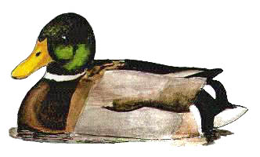

Mallard
The most common water bird at Chard Reservoir. Mallard used to be reared on site.

30/12/00 - 400 birds
05/01/01 - 400 birds
23/12/01 - 340 birds
27/09/02 - 306 birds
16/11/03 - 280 birds
13/02/04 - 270 birds
06/02/05 - 250 birds
13/12/06 - 221 birds
2007 - present but no counts
02/02/08 - 127 birds
11/01/09 - 118 birds with the reservoir part frozen
09/10/10 - 150 birds
13/12/11 - 165+ birds
10/08/12 - 120+ birds
12/08/13 - 143 birds
2014 - Nested. No large counts
2015 - 2 broods of 8 and 7 ducklings. The brood of 7 first seen on 01/07 were reduced to just one in a month. Max 97 on 15/11
2016 - At least 3 broods. Max 107 birds on 04/11
2017 - Several pairs bred. Max 93 birds on 17/09
2018 - At least 2 pairs bred
2019 - At least 2 pairs bred. Max 85 on 13/11
2020 - Probably 4 pairs bred. Many large counts with 10 counts of over 100 through the year. Max 250+ on 30/07 with notably 225 on 21/07, 207 on 01/10 and 172+ on 03/12
2021 - At least 2 pairs bred. 6 counts of over 100 in autumn and winter with max of 170+ on 01/10 and 150+ on 05/01
2022 - Several pairs bred and there was a brood of 18 chicks seen in April and May. Max of 143 on 10/12 with 3 other counts over 100
2023 - Bred this year, but just 7 ducklings seen on 39/06. Max 144 on 24/07 with 100+ on 01/02 and 103 on 17/10
2024 - Bred this year with 10 ducklings on 25/04 and 6 ducklings on 10/06. Up to 90 through the year with 100+ on 05/08 and 100+ on 03/11
2025 - Bred this year with 10 ducklings on 30/04. A new duckling on 11/08. Up to 102 through the year with 168+ on 23/11 and 170+ on 15/12